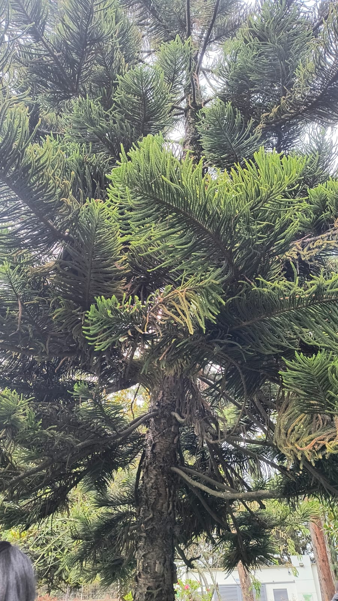

← Volver

Araucaria
Descripción
La Araucaria es un árbol perenne y muy longevo, originario de Sudamérica.
Tiene una forma piramidal perfecta, ramas horizontales y hojas duras en forma de escamas puntiagudas.
Características
- Altura: Entre 30 y 50 metros (algunas superan los 60 m).
- Hojas: Verdes, duras, gruesas, en forma triangular o de escama; muy resistent
- Flores: En conos (masculinos y femeninos en árboles distintos).
- Fruto: Piña leñosa que contiene semillas grandes comestibles, llamadas piñones.
Usos
- Muy apreciada en parques, avenidas y jardines amplios por su forma simétrica.
- Sus semillas (piñones) son comestibles y nutritivas; se consumen cocidas o tostadas.
Importancia Ecológica
- Las semillas son alimento para aves, roedores y personas.
- Ofrece refugio a muchas especies de fauna andina.
- Considerada una especie relicta, es decir, muy antigua, que conserva la historia evolutiva de los bosques del sur.
- Cumple un papel clave en la conservación de ecosistemas de montaña.